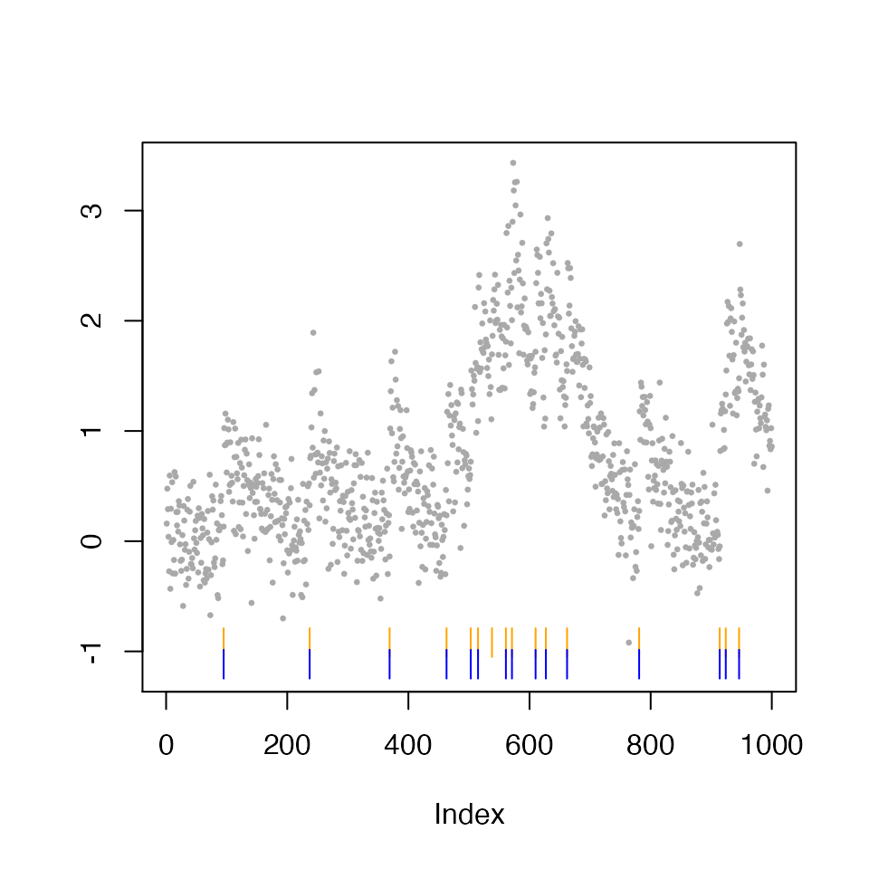

Software tutorials
Tutorials.RmdIn this tutorial, we demonstrate basic use of the SpikeInference package.
First we load the package:
require(SpikeInference)
#> Loading required package: SpikeInferenceWe first use the simulate_ar1 function to simulate from an AR(1) model for calcium imaging data according to \[Y_t = c_t + \epsilon_t, \epsilon_t \sim N(0, \sigma^2), \; t = 1,\ldots, T,\] where \[c_t = \gamma c_{t-1} + z_t, z_t\geq 0, \; t = 2,\ldots, T.\] If \(z_t>0\), then there is a spike at the \(t\)th timestep. We denote the locations of true spikes, \(\{t:z_t> 0\}\), as \(\{\tau_1,\ldots, \tau_K\}\).
In the figure below, we display one such simulation \(y_1,\ldots,y_{1,000}\) (gray dots), with \(T=1,000, \sigma = 0.1, \gamma = 0.98, z_t \overset{i.i.d.}{\sim}\text{Poisson}(0.01)\). The true calcium concentration and true spikes are displayed in green lines and vertical bars, respectively.
gam <- 0.98
sigma <- 0.3
T_length <- 1000
curr_sim <- simulate_ar1(n = T_length, gam = gam, poisMean = 0.01, sd = sigma, seed = 2)
plot(curr_sim)
\(\ell_0\) spike estimation
In the code below, we call the spike_estimates function to estimate spikes using the \(\ell_0\)-penalized problem with tuning parameter \(\lambda=4\). The estimated calcium, \(\hat{c_t}\), and the set of estimated spikes, \(\{\hat{\tau}_1,\ldots, \hat{\tau}_{\hat{K}}\}\), are displayed in blue lines and vertical bars, respectively.
LAMBDA <- 0.7
fit_spike <- spike_estimates(dat = curr_sim$fl, decay_rate = gam,
tuning_parameter = LAMBDA,
functional_pruning_out = FALSE)
plot(fit_spike)
The fit_spike object now contains spike fit information, and the estimated spike times can be accessed using the summary function.
fit_summary <- summary(fit_spike)
head(fit_summary)
#> spikes
#> 1 95
#> 2 237
#> 3 369
#> 4 463
#> 5 503
#> 6 515Importantly, the first five estimated spike locations are printed below.
fit_summary[1:5,]
#> [1] 95 237 369 463 503\(\ell_0\) spike inference
In this section, we demonstrate how to use our software to obtain \(p\)-values and confidence intervals for estimated spikes with 2 different window sizes (\(h=1\) and \(h=10\)); for ease of display, we will only consider the first five estimated spikes.
Recall that for a given \(\hat\tau_j\), the \(p\)-value for testing the null hypothesis \(H_0: \nu^\top c = 0\) can be expressed as \[\mathbb{P}\left(\phi \geq \nu^\top y \;\middle|\; \phi \in \mathcal{S}\cap(0,\infty)\right),\] where \(\mathcal{S}\) is the set of perturbations \(\phi\) that leads to an estimated spike at \(\hat\tau_j\).
The code below demonstrates how to use the function spike_inference, which estimates spikes and performs inference on the estimated spikes for input data. After performing inference, we can use the summary method to get result summaries (in the form of a data frame) of the outputs given by spike_inference.
For h = 1:
h <- 1
inference_spike_toy_example_h_1 <- spike_inference(dat = curr_sim$fl, decay_rate = gam,
tuning_parameter = LAMBDA, window_size = h,
sig2 = sigma*sigma,
return_conditioning_sets = FALSE,return_ci = TRUE)
h_1_summary <- summary(inference_spike_toy_example_h_1)
knitr::kable(head(h_1_summary))| estimated_spikes | pvals | LCB | UCB |
|---|---|---|---|
| 95 | 0.0502840 | -0.2054604 | 1.718220 |
| 237 | 0.3250973 | -1.3097010 | 1.244250 |
| 369 | 0.0122021 | 0.1744081 | 1.980777 |
| 463 | 0.0285364 | -0.0326266 | 1.767183 |
| 503 | 0.0648997 | -0.2931876 | 1.663233 |
| 515 | 0.0041533 | 0.3526278 | 2.056635 |
For h = 10:
h <- 10
inference_spike_toy_example_h_10 <- spike_inference(dat = curr_sim$fl, decay_rate = gam,
tuning_parameter = LAMBDA, window_size = h,
sig2 = sigma*sigma,
return_conditioning_sets = FALSE,return_ci = TRUE)
h_10_summary <- summary(inference_spike_toy_example_h_10)
knitr::kable(head(h_10_summary))| estimated_spikes | pvals | LCB | UCB |
|---|---|---|---|
| 95 | 0.0e+00 | 0.6245171 | 1.149908 |
| 237 | 6.6e-06 | 0.6072524 | 1.191240 |
| 369 | 0.0e+00 | 0.8515320 | 1.375928 |
| 463 | 0.0e+00 | 0.8101850 | 1.337582 |
| 503 | 0.0e+00 | 0.7885913 | 1.313689 |
| 515 | 3.5e-06 | 0.4963485 | 1.038701 |
We see drastically smaller \(p\)-values for the five estimated spikes. Since each of the five estimated locations correspond to a true underlying spike, this demonstrates that larger \(h\) leads to higher power empirically.
We also provide a plot method for output by spike_inference. By default, it plots the estimated spikes associated with a positive change in fluorescence in orange ticks, and the subset with a p-value less than 0.05 in blue ticks.
plot(inference_spike_toy_example_h_10, alpha=0.05)
Miscellaneous functions
In addition to the aforementioned key functions, the package also includes the following helper functions: construct_v and estimate_spike_by_firing_rate.
construct_v
The function construct_v generates the contrast vector \(\nu\) for the null hypothesis \(H_0:\nu^\top c = 0\). We will demonstrate below that \(\nu^\top c\) is indeed the change in calcium in the neighborhood of a given spike \(\hat\tau_j\). We consider the case where there is no spike, i.e., the calcium is decaying exponentially, and we would expect \(\nu^\top c=0\). In the example below, we set \(c_1 = 3\), \(c_t = 0.98 c_{t-1}, \; t=2,\ldots, 50\), \(\hat\tau_j = 20\), and \(h=5\).
gam <- 0.98
T_length <- 50
calcium <- rep(3 * gam ^(0:(T_length - 1)))
thj <- 20
h <- 5
v <- construct_v(length(calcium), thj, h, gam)
sum(v*calcium)
#> [1] -7.771561e-16We see that \(\nu^\top c\) indeed evaluates to 0, up to machine precision.
estimate_spike_by_firing_rate
We have taken \(\lambda\) to be known in this tutorial. Choosing an appropriate \(\lambda\) value is critical to the quality of estimated spikes. The function estimate_spike_by_firing_rate allows us to specify a target firing rate, and then to find the value of \(\lambda\) that yields a number of estimated spikes that is close to that target firing rate.
In the example below, we simulate from an AR-1 model with firing rate 0.05, i.e., we expect to have 5 spikes per 100 timesteps on average.
gam <- 0.98
T_length <- 1000
firing_rate <- 0.05
target_rate <- 0.05
sigma <- 0.1
curr_sim <- simulate_ar1(n = T_length, gam = gam, poisMean = firing_rate,
sd = sigma, seed = 1)
if(sigma>=0.5){
lam_max = 5
}else{
lam_max = 1
}
iter_fit_spike <- estimate_spike_by_firing_rate(curr_sim,
decay_rate = gam, target_firing_rate = target_rate,
lam_min = 1e-7, lam_max = lam_max, max_iters=10,
tolerance=max(5,floor(T_length*firing_rate*0.05)))The number of true spikes in the simulation is 48 (note: we expect to see 50 spikes on average).
We ran estimate_spike_by_firing_rate with a target firing rate of 0.05, and so we expect to obtain around 1000*0.05=50 estimated spikes. By chance, on this example, the function resulted in a value of \(\lambda\) that gave us 48 estimated spikes.